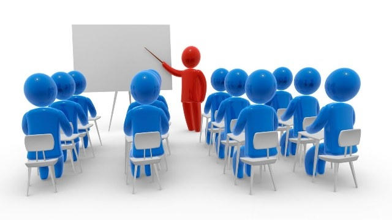

|
Мета конференції: обговорення проблем розвитку бренд-комунікацій в Україні та у світі, пошук шляхів інтеграції теорії та передової практики брендингу та журналістських практик. Заплановано участь в дистанційній формі на платформі ZOOM. Робочі мови конференції: українська, польська, англійська.Для участі у конференції запрошуються вчені, фахівці у сфері соціальних комунікацій, журналістики, бренд-менеджменту, науковці закладів вищої освіти, представники медіа, вітчизняних та міжнародних громадських організацій. Передбачено роботу таких секцій:
Ви можете зазначити, в якій секції хочете взяти участь, залишивши коментар до свого завдання. Якщо коментарю не буде, то члени оргкомітету самостійно визначать, до якої секції зарахувати доповідь. |
 |